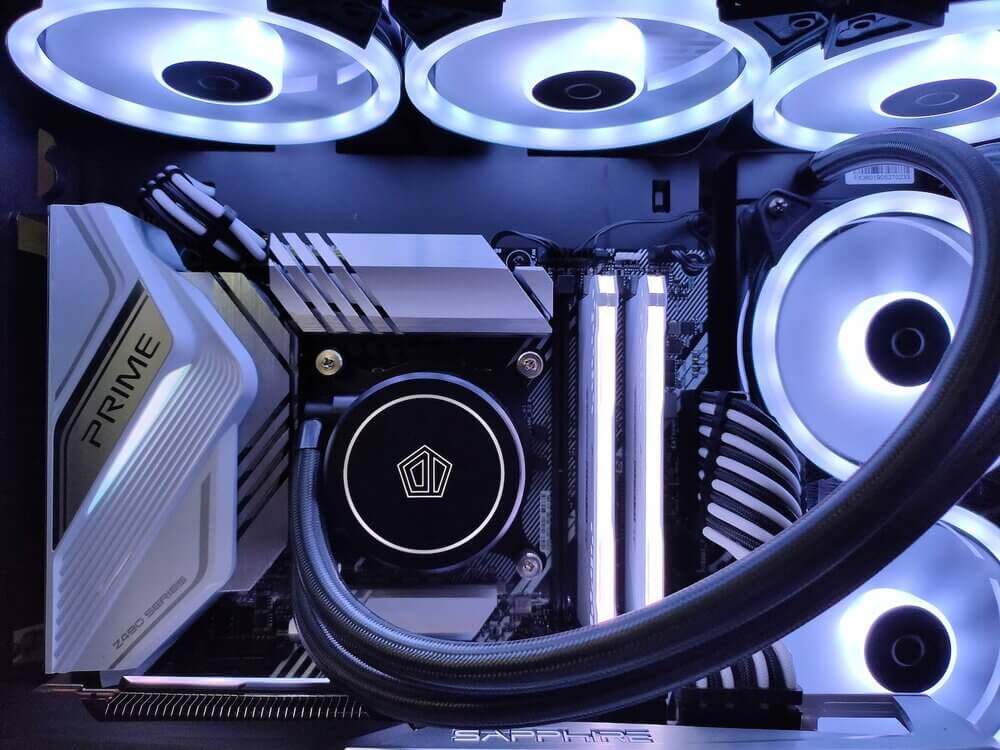

Main Purpose of this site
While for most people using computers and machines an integrated graphic card will be sufficient. This site will be for dedicated graphics cards and explain what they are. Dedicated graphics cards come from different manufactures, have different specs, and cost. This site is meant to provide the different manufactures then break it down from there to provide the specs for each card in an easy way to visualize and get the information needed.
While there are other sites out there a lot of their focus is on other information or selling products. This will be an easy go to website strictly for dedicated graphics cards. You will be able to click on AMD or NVIDIA and see each break down of the card. With the breakdown of the card what will be included is how much dedicated ram will it have. How much will the card cost. What kind of performance can you expect from the card.
.jpg)
Graphics cards also come with other requirements for them to run. This site will also include what kind of power will they need. What kind of space will the need since graphics cards can run very hot because of the cores so some will need extra fans to keep them cool. There is also what kind of CPU needs to match up with the card.